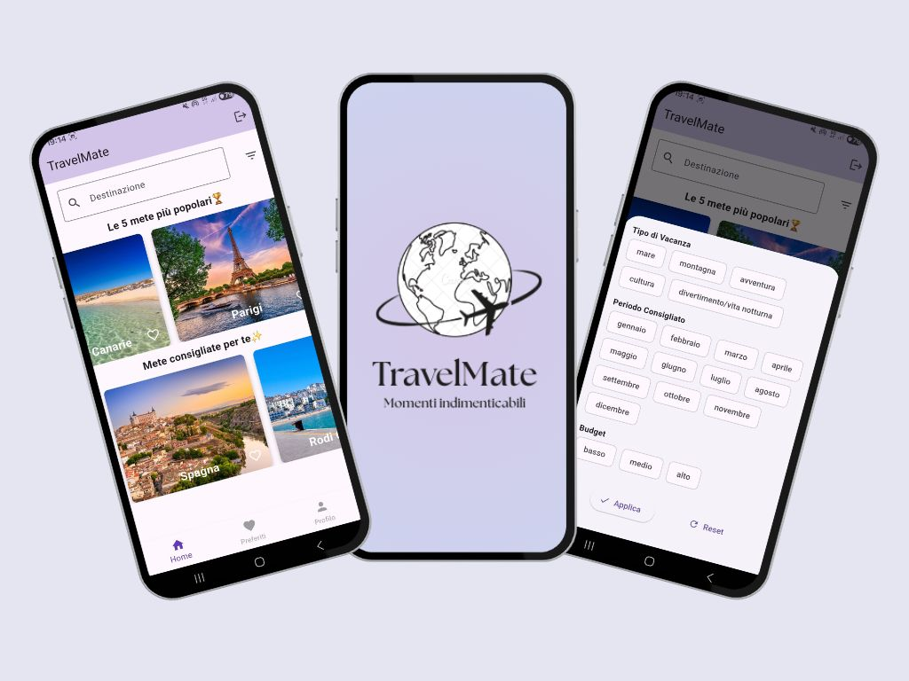

TrainAlert
Un'applicazione pensata per i viaggiatori in treno che spesso si addormentano.
Permette agli utenti di impostare una sveglia intelligente che li avvisa quando stanno per raggiungere la loro destinazione.
La funzionalità principale è quella di personalizzare la preferenza di sveglia, come l'intensità e la durata della vibrazione.
Approfondisci

App-eritivo
Un'applicazione pensata per chi cerca locali per l'aperitivo.
Permette di visualizzare una lista di bar e vedere i dettagli del menu, l'atmosfera e la tipologia di aperitivo offerto. L'obiettivo è aiutare gli utenti a scegliere il luogo ideale per il loro aperitivo.

TravelMate
Un'app di viaggi che aiuta gli utenti a trovare e pianificare la loro prossima vacanza.
L'applicazione offre una ricerca per destinazioni, mostrando "le 5 mete più popolari" e suggerimenti personalizzati in base agli utenti, i quali possono anche filtrare le destinazioni in base ad ulteriori criteri come tipo di vacanza (mare, montagna, cultura), periodo consigliato e budget, per trovare l'esperienza di viaggio perfetta.
